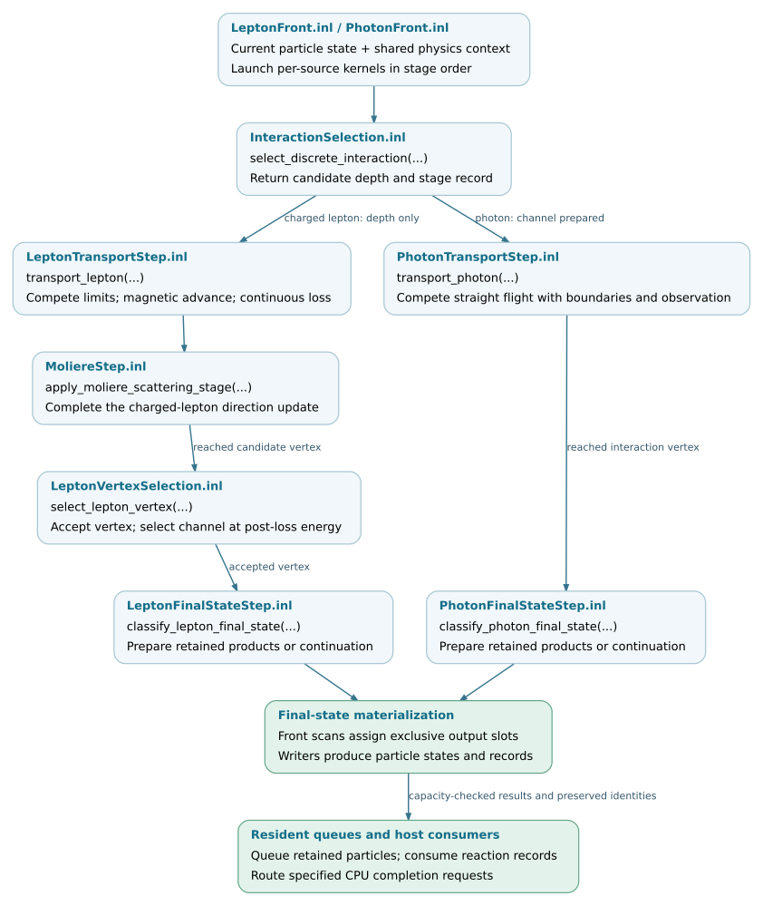

Transport and interaction kernels
Transport combines sampled interaction depths, environmental limits and continuous processes to advance a particle. Interaction kernels then construct the final state at a reached vertex. These numerical functions are separate from the execution layer that allocates output slots, advances resident queues and returns work to native C8 modules.
This chapter follows one particle through the standard Kokkos EM path. It continues from Physics models and table preparation and Environment and geometry; the surrounding batch and event control is described in Execution and scheduling.
Note
Source baseline: d5297c43.
The description covers the proposal-native Kokkos EM implementation.
Native C8 scalar transport and the EGS4 execution path have separate
implementations. A shared physics model or table does not imply that these
paths use the same C++ call chain or random stream.
Stage responsibilities
Stage |
Main input |
Output and responsibility |
|---|---|---|
Candidate sampling |
Particle state, physics view and random identity. |
|
Charged-lepton transport |
Candidate, continuous tables, environment and geometry configuration. |
|
Charged-lepton vertex selection |
Reached candidate, post-loss energy and retained acceptance draw. |
Selected process/component and loss fraction, rejected-vertex continuation, or specified CPU completion request. |
Photon transport |
Candidate and environment/geometry data. |
|
Final-state classification |
Selected vertex, model parameters, thinning configuration and random identity. |
Kinematic parameters and retained-child counts, or continuation, suppression or fallback. No output queue is allocated here. |
Final-state materialization |
Classification, exclusive output offset and first child history ID. |
Particle states and records written into caller-provided output slots. |
Source organization
Public headers declare the per-particle interfaces and records. Their inline
implementations reside under corsika/detail/kokkos/em. Resident execution
files connect these functions to the queue and output storage.
corsika/kokkos/em/ ├── InteractionRecord.hpp candidate and vertex state ├── LeptonTransportRecord.hpp charged-lepton endpoints, limits and deposits ├── PhotonTransportRecord.hpp photon endpoints and limiting process └── FallbackRequest.hpp CPU completion identity and diagnostics corsika/kokkos/em/algorithms/ ├── InteractionSelection.hpp candidate-depth interface ├── LeptonContinuousStep.hpp continuous-step preparation and final energy ├── LeptonTransportStep.hpp charged-lepton propagation interface ├── MoliereStep.hpp post-transport scattering stage ├── LeptonVertexSelection.hpp post-loss acceptance and channel selection ├── PhotonTransportStep.hpp photon flight interface ├── LeptonFinalStateStep.hpp charged-lepton classification and materialization └── PhotonFinalStateStep.hpp photon classification and materialization corsika/detail/kokkos/em/algorithms/ ├── InteractionSelection.inl cuts, rate queries and candidate sampling ├── LeptonContinuousStep.inl continuous depth and energy-loss queries ├── LeptonTransportStep.inl limit competition, magnetic advance and loss ├── MoliereStep.inl projected-angle sampling and direction update ├── LeptonVertexSelection.inl vertex acceptance and native selection ├── PhotonTransportStep.inl straight transport and vertex reachability ├── LeptonFinalStateStep.inl lepton products, LPM and thinning ├── PhotonFinalStateStep.inl photon products, LPM and thinning └── NativeMuonPairCutRecord.inl tagged below-rest-mass cut accounting corsika/detail/kokkos/em/execution/ ├── LeptonFront.inl resident lepton kernels and output materialization ├── PhotonFront.inl resident photon kernels and output materialization ├── LeptonCascade.inl lepton front iteration and checkpoint handling └── PhotonCascade.inl photon front iteration and checkpoint handling corsika/detail/kokkos/em/proposal/ └── ProposalCpuFallbackHandler.inl complete a specified native reaction corsika/detail/kokkos/scheduling/ └── EmRouter.inl consume results and dispatch CPU returns
Validation coverage
The tests below cover different layers of the step. Many compare against a retained production reference within the selected execution space. They establish implementation compatibility for the tested inputs, not independent physical accuracy or universal bitwise equality between GPU architectures. Real-table targets require the export-enabled build and its data fixtures.
Test source |
Existing coverage |
|---|---|
Controlled branch tests for cuts, invalid inputs, acceptance ties, continuation and deferred photon completion. |
|
Real native-table sampling and post-loss selection, compared with the retained production reference on host and selected execution space. |
|
Native mass, range, step-limit and final-energy queries; corresponding device tests exercise the selected execution space. |
|
Node-tree charged-lepton steps, limits, endpoints, deposits and failure records against the retained reference. |
|
Straight photon transport, boundary/observation ordering, cuts, interaction reachability and deferred-completion metadata. |
|
Scattering draws and directions, cut bypass and missing-muon-model behavior. |
|
Charged-lepton classification and materialization, including native sampling, LPM, thinning and CPU-only channels. |
|
Photon products and native pair sharing, suppression, thinning and tagged muon-pair cut behavior. |
|
Resident lepton-stage outputs, histories, fallback records and projected records. |
|
Resident photon outputs and records, stable ordering and execution-space comparison. |
|
Lepton iteration and resumed-checkpoint consistency, including history allocation. |
|
Photon iteration and resumed-checkpoint consistency, including history allocation. |
|
Specified CPU reactions with real PROPOSAL calculators and retained selection inputs. |
This map records coverage in the pinned source revision; it is not a test report. Algorithm or model changes require the relevant executable tests and an appropriate full-shower validation.
Per-particle execution flow
The diagram follows reached and accepted interaction vertices. Boundary continuations, cuts, observations, decay candidates and early fallback requests bypass the later interaction stages and are omitted here. Selecting a photon channel is not enough to execute its reaction: transport must reach the candidate vertex first. The surrounding execution layer handles all returned outcomes and queue checkpoints.


Numerical step functions and their resident callers. Open the SVG for
links to the checked source revision.
SVG ·
Editable DOT source.